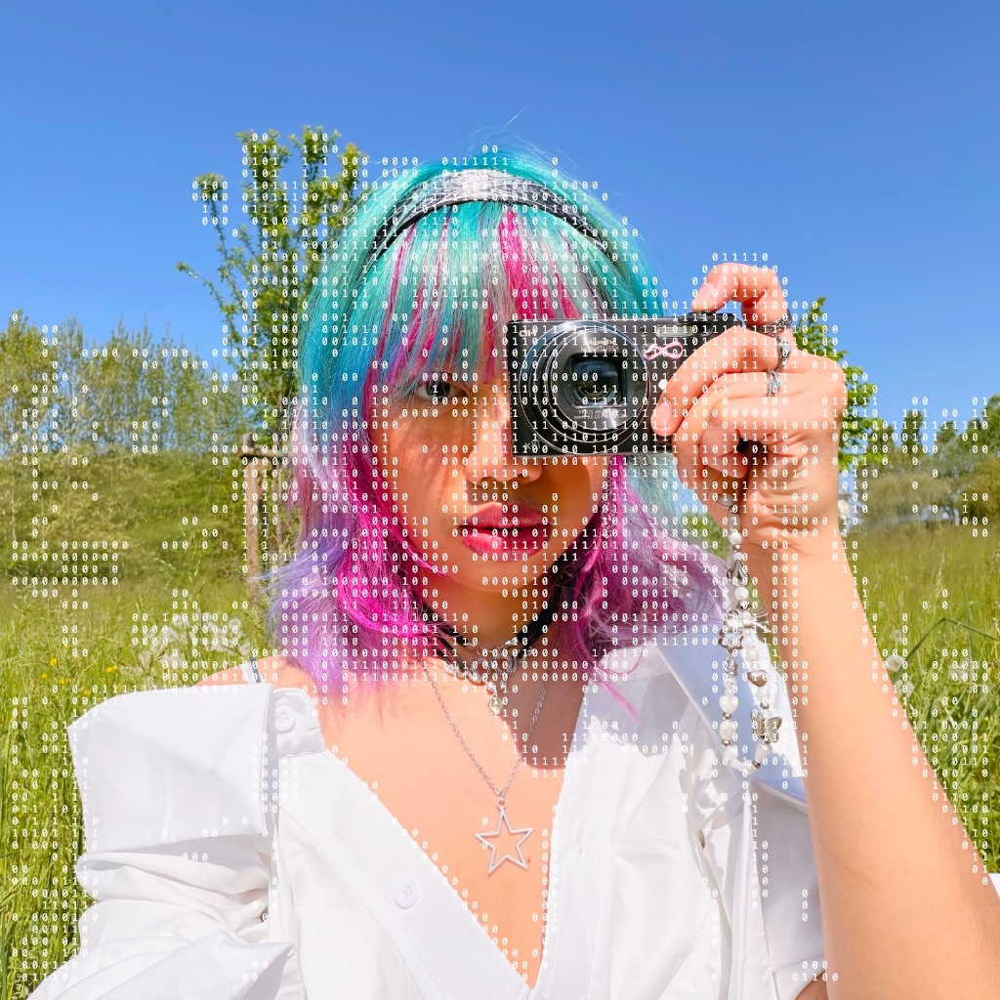
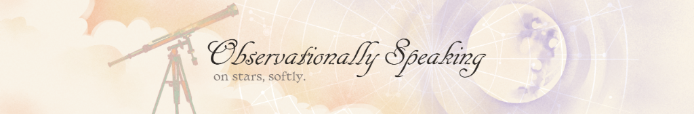

01
Observational cosmology
VLBI time-series analysis and quasar astrometry — testing how stable our celestial reference points really are.
Jessica Syafaq Muthmaina · astrophysics & cosmology · Padova

About
I am currently pursuing my M.Sc. in Astrophysics and Cosmology at Università degli Studi di Padova in Italy. I previously graduated with a B.Sc. in Physics from Universitas Gadjah Mada in Indonesia, where I specialised in Theoretical and Computational Physics.
Next up is an Erasmus+ traineeship at IRAM Grenoble, France, within the Superconducting Devices Group — working with Dr. Eduard Driessen on superconducting detectors and radio astronomy instrumentation receiver systems.
Away from the telescope, I’m active in intersectional advocacy and community building through collective actions in Garut with Sadar Setara and Ruang Postulat.
Focus
01
VLBI time-series analysis and quasar astrometry — testing how stable our celestial reference points really are.
02
Superconducting detectors and radio astronomy receiver systems, with hands-on high-energy instrumentation lab work.
03
Reproducible scientific pipelines, from noise modelling to manuscript, built on an open Python stack.

Featured research
Quasar 4C31.61 (2201+315) is an essential celestial reference point in the International Celestial Reference Frame (ICRF). To evaluate its positional stability, we analyse multi-year VLBI position time series using the Allan standard deviation method.
Allan variance formula
This model helps separate white frequency noise processes from random walk positional changes caused by plasma jets or structural variations at high resolution.

Outreach · science communication
YouTube storytelling blending warm visual reflections with high-energy astrophysics and cosmic science topics.
Launch channelA Substack publication bridging theoretical physics, literature, philosophy, and environmental perspectives.
Read essaysCurriculum vitae
Università degli Studi di Padova (UNIPD), Italy
High Energy Instrumentation Laboratory — 28/30
Universitas Gadjah Mada (UGM), Indonesia
Theoretical and Computational Physics concentration
Using VLBI Time Series and Allan Standard Deviation
Journal of Physics: Conference Series · arXiv:2401.12325

Open to collaborations, talks and questions about anything above.